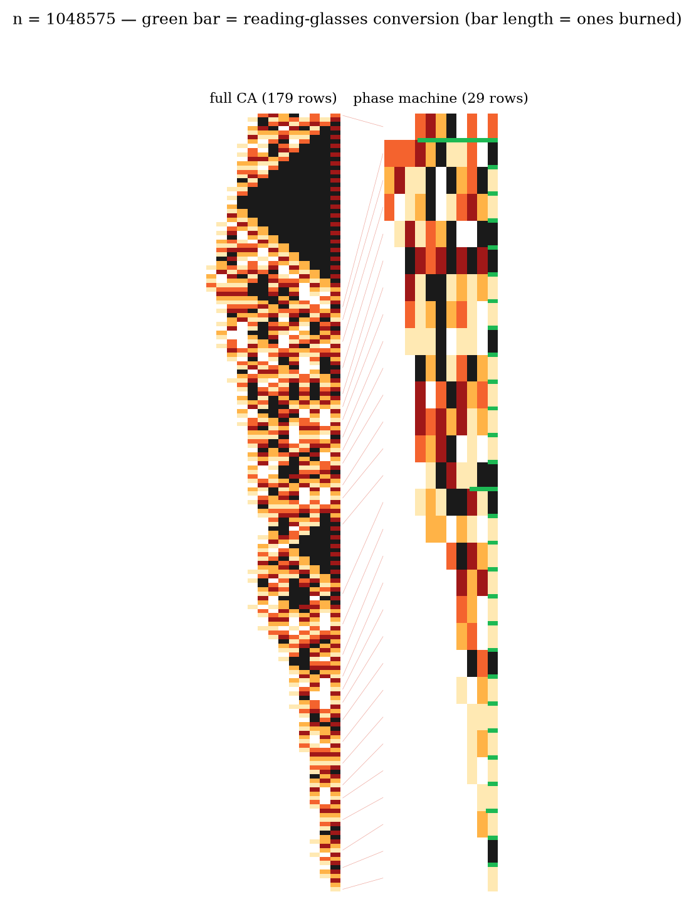
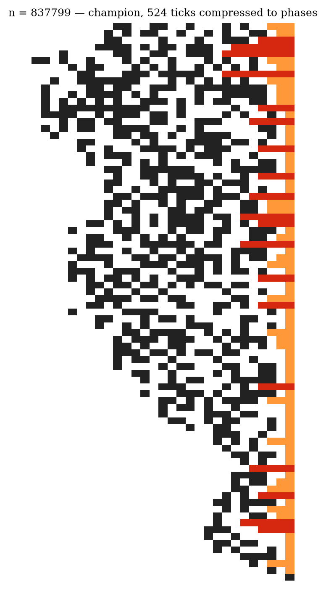

Part 3 of 6. Series index in part 1. Repository: collatz_ai.
A Collatz orbit climbs only one way: a block of k trailing ones in binary buys exactly k climbing steps, each multiplying by 3/2. We call such a block a fuel tank. The champion orbits — record-holders like 27 or 837799 — are the ones that keep finding fuel. This part is the economy of that fuel, and every law in it is proved or exactly measured.
The Ledger (Thm 79). How much fuel can a number pre-program? Exactly its own size: prescribing F bits of future fuel costs precisely F bits of the seed, at par — the probability of any prescribed packet sequence (k₁,...,k_p) is exactly 2^−(k₁+...+k_p). A 20-bit number owns a 20-bit tank and not one bit more.
The Audit (Obs 80). Yet the champion 837799 — 20 bits — burns 195 bits of fuel in its lifetime. 90% of everything it burns comes not from its tank but from re-crystallized exhaust: the burning writes fresh, provably noise-like bits, and some of those happen to condense into new fuel.
The Refuel Mechanism. How does noise become fuel? We found the exact microscopic reaction: 3 × 10101 = 111111. Multiplying by three converts an alternating bit pattern into a solid block of ones. The spacetime pictures of part 2 show it constantly: eroding triangles exhale alternator dust; dust occasionally condenses back into a triangle. A two-species ecology, with an exact rule table (the run grammar, Thm 101).
Sterility (Thm 78). Can a big tank refuel itself? No — provably. Burning a pure tank 2^k − 1 returns fresh fuel of exactly 1 when k is odd (a one-line proof: 3^odd ≡ 3 mod 8), and at most O(log k) in general — effectively bounded by p-adic Baker theory. We scanned to k = 100,000: the biggest return ever was 17. A tank of a hundred thousand ones regenerates seventeen.
The coin stays fair (Obs 81). Do late-orbit packets get weaker? No: the mean packet is 1.99 at every scale we measured (12, 16, 20 bits). The packets never weaken. What shrinks is the arena: the house edge is −0.83 bits per fuel cycle, the value drifts down, and the endgame is forced by size, not by fatigue.
A Collatz orbit is a fire that exhales its own ash as dust, where the dust re-condenses into fuel at exactly the fair-coin rate, and a fixed house edge guarantees the fire, on average, goes out.
Every clause of that sentence is now a theorem or an exact measurement. And the one word carrying all remaining mystery is "on average" — because for a specific number, the fire's whole future is determined by the seed, and the question whether some seed's fire burns forever is precisely the Collatz conjecture.

Here is the resolution of an apparent paradox: how can a 20-bit seed "contain" 195 bits of fuel history? Because determined is not stored. The seed stores 20 bits of information; the map unfolds them — Collatz is a decompressor, and champions are the seeds of maximal decompression ratio. In the right coordinate system (ordering numbers by their dynamical history rather than their size — an idea of mine that turned out to be the standard conjugacy, built from scratch) the champion is a 2^179-rank object that happens to compress into 20 arithmetic bits.
This is also why no simple formula spots champions in advance, and why every "reducing quality" that people (including us) keep proposing must fail: we proved that no local property of the digits can predict the fuel (a whole ladder of no-go theorems, culminating in exact statements in part 4). The fuel is not in the digits. It is in the position of the number within the unfolded tree — visible only by running the machine.
Next: Part 4 — The fair coin: the strongest impossibility we could prove.
